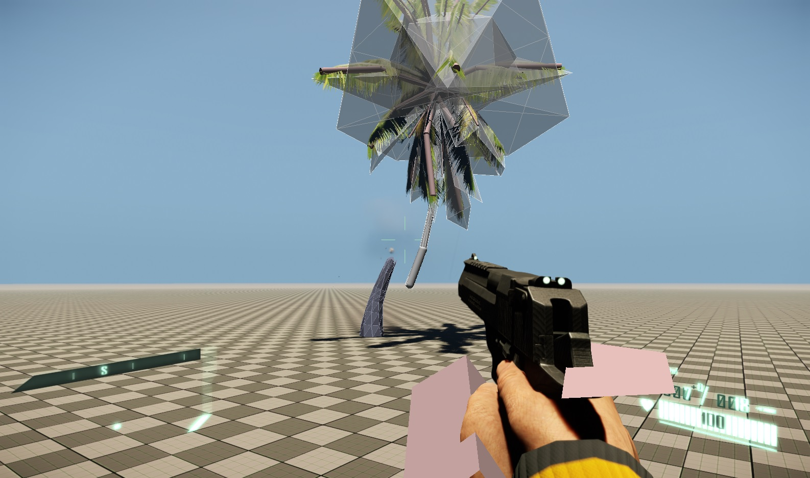
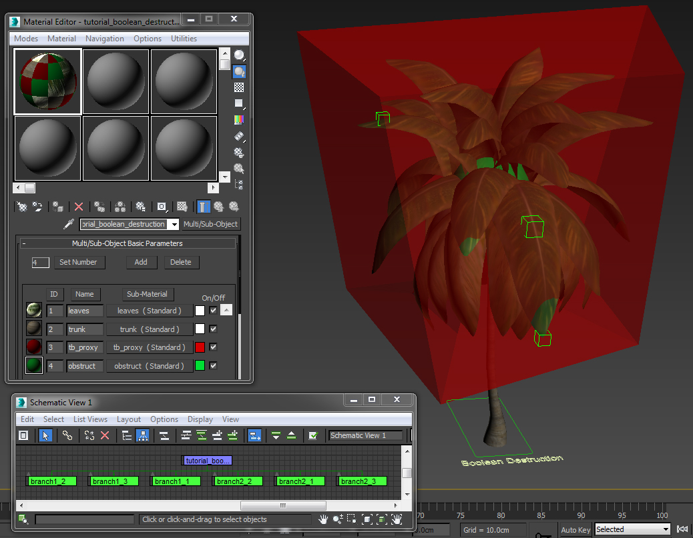
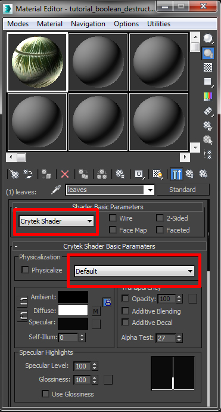
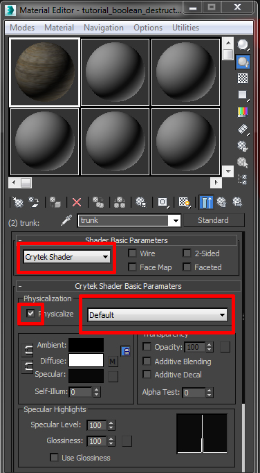
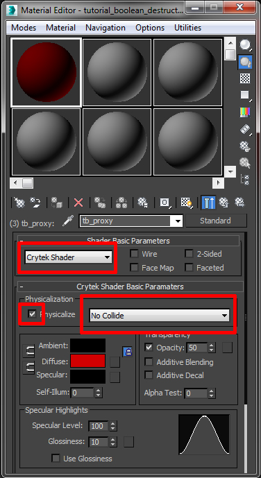
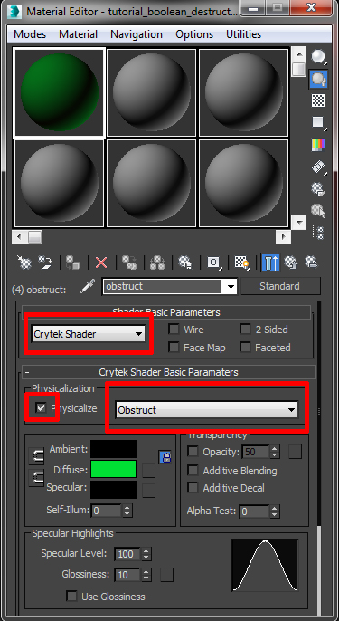
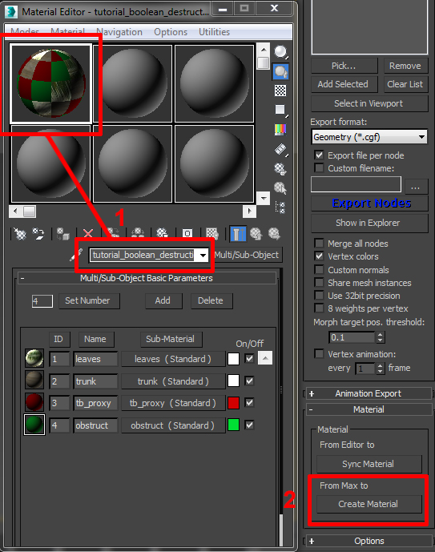
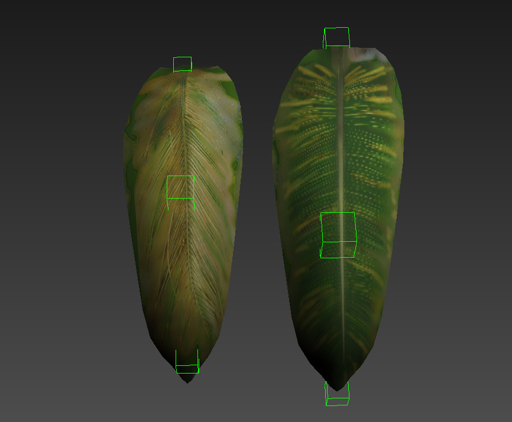
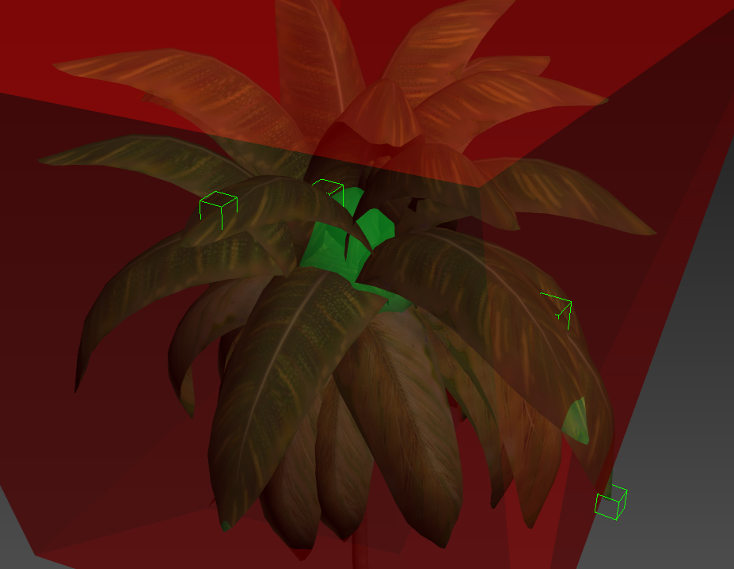
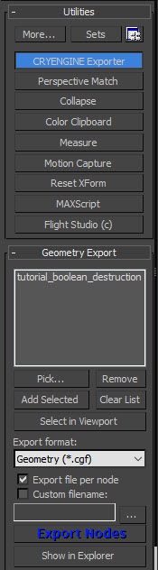

Overview
This page will cover the 3dsMax pipeline for getting vegetation assets with Boolean Destruction into CRYENGINE.

Pic1: Boolean Destruction in action (with physics debug info displayed: F10 or p_draw_helper=1)
Tutorial Files
Source 3dsMax scene with exported CRYENGINE files:
Prerequisites for this Tutorial
Before you continue with this tutorial, make sure to have read and understood the following;
- How to Install CryMaxTools
- The Basic CRYENGINE 3dsMax Workflow
- CRYENGINE Exporter
- 3dsMax Unit Scale to Match up With CRYENGINE Unit System
Helpful Information
Make sure to keep the following things in mind while you work on your asset:
- Don't create any additional proxy objects for parts you want to be breakable; just physicalize the visible mesh SubID for the breakable parts
- Make sure to avoid gaps and close your procedural breakable mesh (a sealed proxy)
- Merge everything to one object if you are using breakable and non breakable geometry parts for your asset; don't create hierarchies by linking several geometry parts together
- The material for your breakable object needs to have the wood_breakabale and Surface_Type assigned in order for the engine to activate Boolean Destruction for the geometry
- Boolean Destruction can be fairly performance heavy depending on different factors:
- Geometric complexity of the boolean shape.
- Geometric complexity of the breakable asset.
- The number of breakable objects used in the level.
- The number of successive booleans applied to the breakable object.
Initial 3dsMax setup
For this tutorial, we will be creating our asset in the following directory.
<Your_Project>\Assets\Objects\tutorial\vegetation\05\tree\boolean_destruction\
To begin with, we save our 3dsMax scene to this location. All our exported assets will be saved in there. Some of the textures that we will use are derived from an already existing asset and we will point you to the directory's location later in this tutorial.
We will continue with the assumption that you have already created the basics of the asset, since this isn't a 3dsMax modelling tutorial. We will begin with preparing the asset ready for CRYENGINE, assigning SubIds to the relevant polygons and configuring the material.

Pic2: 3dsMax overview of the finished model including the visible and no-collide mesh
Material
First, we will configure the material for the object. In 3dsMax, open the Material Editor, and create a new multi-material called tutorial_boolean_destruction, with four sub-materials. Name the first SubId leaves, the second one trunk, the third SubId as tb_proxy (tb = Touch Bending) and the fourth one as obstruct. The names of the SubIds are not important here. Just name them something specific to their purpose for your reference. See Pic2 and note the multi-material setup in the 3dsMax material editor.
Leaves Id Setup
Open the "leaves" sub-material (SubId1). Load in your diffuse map and normal map to the material paths. The diffuse map should contain an alpha map for the opacity. The normal map should also contain an alpha map for the PBS smoothness value.
The example file refers to the following textures already provided within the tutorial files:
<>Your_Project>\Assets\Objects\tutorial\vegetation\05\tree\boolean_destruction\tutorial_boolean_leaf_diff.tif<Your_Project>\Assets\Objects\tutorial\vegetation\05\tree\boolean_destruction\tutorial_boolean_leaf

Pic3: Leaves SubId1 "Shader Basic Parameters"
In the Shader Basic Parameters window:
- Select the Crytek Shader.
- In the Physicalization section, DON'T check the Physicalize check-box, and in the next drop-down menu select Default.
Trunk Id Setup
Open the trunk sub-material (SubId2) and load in your diffuse map and normal map to the material paths. The normal map should also contain an alpha map for the PBS smoothness value.
The example file refers to the following textures already provided within the tutorial files:
<>Your_Project>\Assets\Objects\tutorial\vegetation\05\tree\boolean_destruction\tutorial_boolean_trunk<Your_Project>\Assets\Objects\tutorial\vegetation\05\tree\boolean_destruction\tutorial_boolean_trunk

Pic4: Trunk SubId2 "Shader Basic Parameters"
In the Shader Basic Parameters window:
- Select the Crytek Shader.
- In the Physicalization section, check the Physicalize check-box.
- In the next drop-down menu select the Default option.
For Boolean Destruction to work additional proxy geometry is not needed. The material for the trunk needs to physicalize the render mesh making sure that the trunk will be solid and breakable.
There are two reasons why additional proxy geometry does not work with Boolean Destruction:
- Precision: The boolean system uses exact hit detection. This makes a rough physics proxy obsolete and the physicalization of the render mesh necessary.
- Performance: As soon as the first impact causes a hole through a boolean subtraction the shape and geometry of the render mesh changes. An additional physics proxy would mean that a second object needs to be cut as well in order for the next bullet to travel through the newly created empty space.
tb_proxy Id Setup
Open the tb_proxy sub-material (SubId3).
This sub-material material is used for the Touch Bending setup on the leaves. For more information on the Touch Bending setup, please go

Pic5: tb_proxy SubId3 "Shader Basic Parameters"
In the Shader Basic Parameters window:
- Select the Crytek Shader.
- In the Physicalization section, check the Physicalize check-box.
- In the next drop-down menu, select the No collide option.
obstruct Id Setup
Open the obstruct sub-material (SubId4).
This physics obstruct parameter in the sub-material is used to define how much air resistance this object has. The amount of air resistance is defined through the size of the obstruct volume. The larger the obstruct volume, the slower the tree will fall.
Examples:
- If you break the tree trunk and you find the upper part if falling too slowly, this means your obstruct proxy is too big. Reduce the size of the obstruct volume.
- If you break the tree trunk and you find the upper part if falling too fast, increase the size of the obstruct volume.

Pic6: obstruct SubId4 "Shader Basic Parameters"
In the Shader Basic Parameters window:
- Select the Crytek Shader.
- In the Physicalization section, check the Physicalize check-box.
- In the next drop-down menu, select the obstruct option.
Export the Material
Now, we have configured the material for the object with four SubIds, two for the visible parts of the material (leaves and trunk) and the other two to control the activation of the Touch Bending (tb_proxy) and to define the air resistance (obstruct).
- Make sure you have the correct material selected in the Material Editor (you need to be at the materials root level, not inside a SubId).
- In the CRYENGINE exporter, click the Create Material button. Save this into the same directory as the object:
<Your_Project>\Assets\Objects\tutorial\vegetation\05\tree\boolean_destruction\tutorial_boolean_destruction.mtl

Pic7: Selecting the correct material for the texture export
Geometry
Our geometry for this tutorial is going to be a palm tree. This plant is perfect for explaining this type of technology since its trunk is thin enough to break in a believable way through a boolean destruction operation. On top of that the leaf crown is a good example on how obstruct volumes work when it comes to air resistance on pieces that will fall down afterwards.
Creating the Trunk
Create your tree trunk geometry and apply the material we just created to it (tutorial_boolean_destruction.mtl). Change its material SubId to 2 ("trunk"). Finally use the Unwrap UVW modifier to adjust its UV shell.
This section of our geometry will be the destructible part. Make sure to avoid holes in your mesh. A boolean operation can only successfully applied to fully closed geometry.
The default boolean cut shape has a predefined width so keep the trunk radius on a reasonable value in order to get clean cuts through the whole mesh. The trunk will only break when this operation cuts completely through it.

Pic8: Geometry of the palm tree trunk
Creating the Leaf Crown
Next create a single big leaf mesh for your palm tree and apply the material we just created to it (tutorial_boolean_destruction.mtl). Change its material SubId to 1 ("leaves"). Finally use the Unwrap UVW modifier to adjust its UV shell to only fit around one of the leaves on the texture.
Adding Touch Bending
For this example the tree crown will use two sets of bendable leaves. This will add more believability to the breaking process. With Touch Bending the leaves will be get physicalized as soon as they fall to the ground when the tree gets destroyed. First copy your leaf and move the UV shell of your copy to another leaf texture. Now create two touch bending setups for both leaves.
Don't copy your leaves or add a Touch Bending proxy yet until we are start with the next step.

Pic9: Both leaves with Touch Bending dummies
Adding Detail Bending
To achieve even more believability to our asset we will be using our Detail Bending system. This will allow us to add varied movements to the leaves.
For more information on the Detail Bending setup, please go
Throughout this process you can finish your leaf crown geometry and add a proper Touch Bending proxy to it at the end.

Pic10: Geometry of the palm tree crown using a Touch Bending and Detail Bending setup
Adding Air Resistance Geometry (obstruct)
For this functionality you need to set up a single piece of geometry to define proper air resistance. The bigger its volume the slower the top piece will fall down after you shoot the tree. This helps the tree to fall down in a more believable way . Create a simple low poly sphere with a radius of roughly 1m and put it right in the middle of the leaf crown.

Pic11: Additional obstruct geometry within the leaf crown
Export the Geometry
We are now ready to export our geometry to the engine. In the CRYENGINE exporter:
- Add the root node of the asset to the export list (in this case its called tutorial_boolean_destruction).
- Select Geometry (*.cgf), from the Export format drop down list.
- Press the Export Nodes button.

Pic12: Adding the asset to the exporter
Continue to CRYENGINE
We have now finished the setup for the 3dsMax portion of the tutorial. To continue move to the next page where we configure the material and use the Vegetation Tool to place down some of these Touch Bending assets.